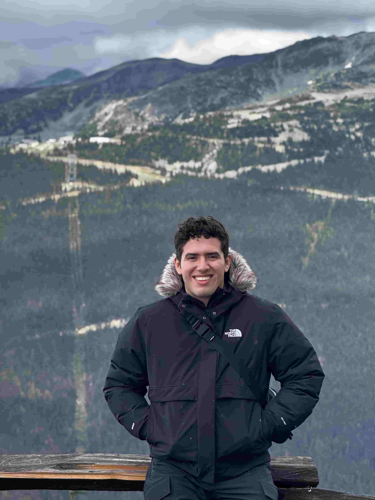

Daniel Osorio
About me
Hi, I'm Daniel, a 24-year-old from Mexico. I'm studying Software Development online at BYU-Idaho and work as a senior BDR at UnitX, selling AI vision systems for the manufacturing industry. I'm happily married to my amazing wife, Kenny. I love steak, good music, and spending time with my wife and family—traveling, shopping, watching movies, and going to concerts. My goal is to become an excellent software engineer specializing in AI and machine learning, always striving for growth and new challenges.
Mexico
Mexico is a country in North America. It is well known for its rich variety in gastronomy, culture, and historical landmarks. It is also famous for its vibrant traditions, beautiful beaches, ancient ruins like the Mayan and Aztec temples, and colorful festivals such as Día de los Muertos.